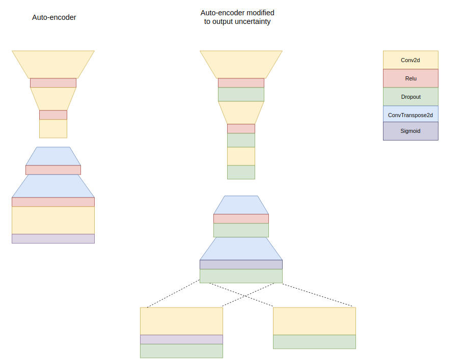
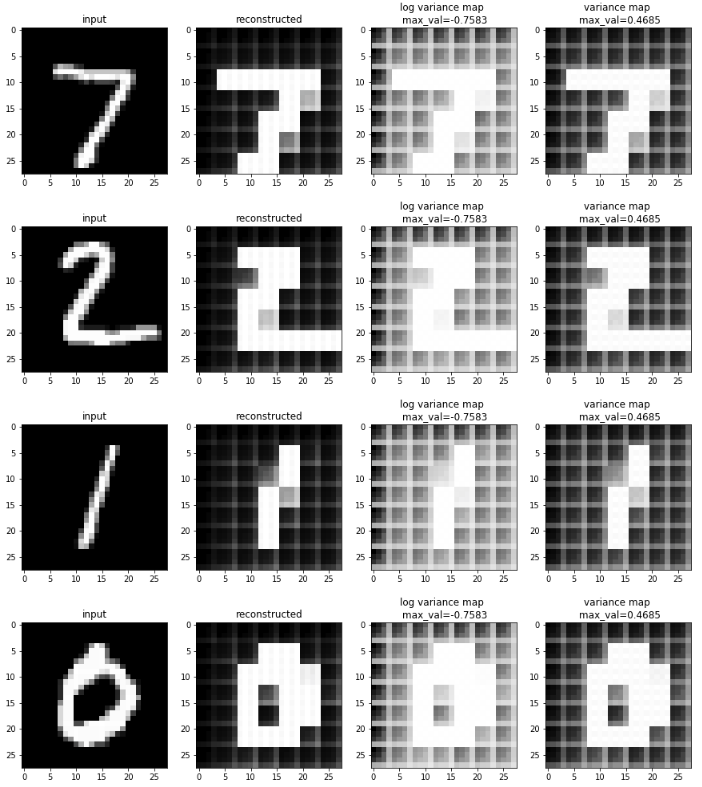

This is an attempt to understand and recreate the work presented in What Uncertainties Do We Need in Bayesian Deep Learning for Computer Vision? by alex kendall and yarin gal.
The paper proposes framework to include uncertainty in context of classification as well as regression by deep neural network. For the purpose of this article I will stick to uncertainty in context of some regression by deep neural nets.
Broadly uncertainty can be of two types
Aleatoric : uncertainty inherently in the observation (i.e sensor which captured the data was malfunctioning, obtaining more data from such a sensor won’t help cure the problem)
Epistemic : uncertainty in the model parameters, this can be explained away with more data
Author proposes a method to account for both type of uncertainties in a given baseline model (baseline model doesn’t acount for uncertainty).
Suppose the baseline model has the loss function: Here $D =$ number of pixels in the output and $\hat{y_i}$, $y_i$ are predicted pixel value and ground truth pixel value for pixel $i$, where sum is over all the pixels.
To account for uncertainties, we should
this will try to learn the uncertainty without any supervision, $\log\hat{\sigma_i^2}$ will prevent the uncertainty from blowing up, where as $\frac{1}{2\hat{\sigma_i^2}}$ will prevent uncertainty to going down to zero. This is like base loss function except that it is weighted using uncertainty and the hope is that we will hit a sweet spot where network is still outputing values close to original ground truth but also giving us idea about uncertainty (which is non-zero and not infiinity)
for training it’s better to use $s_i = \log\sigma_i^2$ as this will prevent a possible division by zero operation.
In order to see it in action, consider the toy problem where I have created an autoencoder for MNIST, then I have modified this autoencoder by introducing
The modified network is train with the above mentioned $L_{BNN}$ with $L2$ norm penalty on the weights of the model. The following diagram shows the oriignal network and modified network 
My expectation is that even with modified autoencoder (with uncertainty) I should be able to get good reconstruction of digits and uncertainty maps should be something that makes sense visibily. I’m not sure if this is achievable
log variance map corresponds to $s$ (i.e $\log\hat{\sigma^2}$) values which was used in loss function
and variance map corresponds to $\log\hat{\sigma^2}$ values
